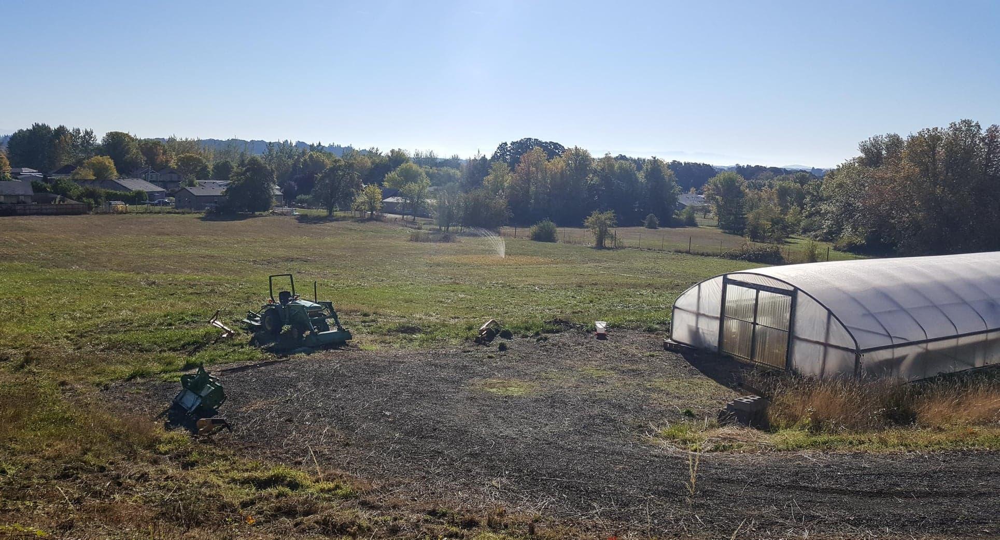

Community Supported Agriculture
Philomath, Oregon
4 Roots Farm is a member owned and operated farm based in Philomath Oregon. Our farm was established in January of 2019 and is run by 4 horticulture majors with expertise in sustainable agricultural production. Our mission is to provide our community with the freshest produce and eggs at affordable prices while using our horticultural knowledge to produce crops in a sustainable way. Although we are not organically certified, all of our production methods follow organic guidelines. We never use synthetic fertilizers, pesticides, herbicides or fungicides. Instead, we use time tested farming techniques such as crop rotations and the utilization of beneficial insects to combat pest and disease issues in our crops. Instead of conventional fertilizers, we use compost and natural sources of nutrients to supply our crops with the nutrition they need.
Our chickens are raised on our pasture where they have plenty of room to roam and do what chickens do best. We source our feed from a local feed company called Mosaic farms. Mosaic farms sources their feed from local farms and they value sustainable practices. Their feed is non gmo as well as corn and soy free. Check out their website for more information on their feed at mosaicfarms.com. We strive to be as transparent with our production methods as possible.
If you have any questions about our farm or would like to join our CSA program please feel free to contact us at 4rootsfarm@gmail.com.